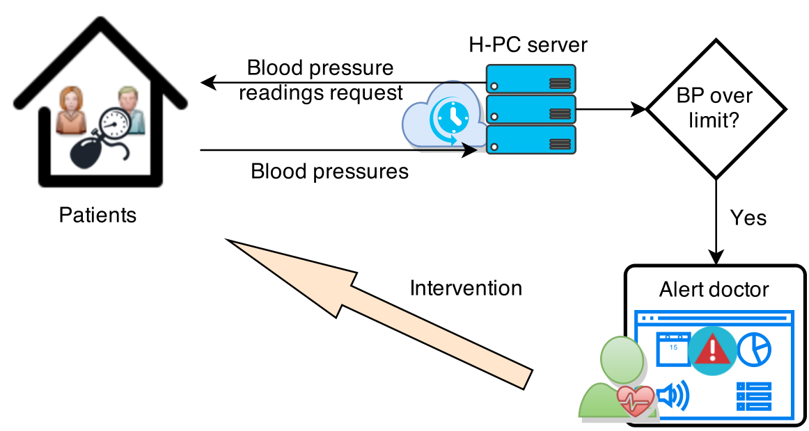

Management of Cloud systems applied to eHealth
Jordi Vilaplana


September 10, 2015
Supervised by
Francesc Solsona & Francesc Abella
Outline
- Introduction
- Methodology
- Conclusions and future directions
- Questions and discussion
Introduction
- Modelling Cloud systems
- Cloud computing challenges and issues
- Motivations for eHealth
- Description of eHealth
- Applied cases: Smoking and Hypertension
- Research objectives
- Contributions
Introduction

Modelling Cloud systems
What is Cloud computing?
Cloud computing is a general term for anything that involves delivering hosted services over the Internet

Clouds can be delivered according to different service and deployment models
Service models

Deployment models

|

|

|
Advantages

|
|

|
|
However... |
Cloud systems are complex |
⇨ |
Modelling |
|
Queueing theory |
Nonlinear programming |
Cloud simulation |
Cloud platform |
Queueing Theory
- Queueing theory is a mathematical method of analyzing the congestions and delays of waiting in line
- Queuing theory is used to develop more efficient queuing systems that reduce customer wait times and increase the number of customers that can be served

A Cloud system can be transformed to...
A queueing theory model

Transform Cloud systems to queueing theory assets
Predict behaviours through queueing theory formulas
Nonlinear programming
A nonlinear programming problem (NLP) deals with mathematical optimization problems where the objective function to be maximized or minimized, or some of its constraints, are nonlinear.
Generally, a NLP can be defined as:
\begin{equation} Max(f(x_{1},x_{2}, ..., x_{n})), \end{equation} s.t. (subject to): \begin{equation} \begin{split} h_{i}(x) = b_{i} & \quad (i = 1, 2, ..., m) \\ x_{j} \geq 0 & \quad (j = 1, 2, ..., n) \end{split} \end{equation}
Once the NLP has been defined, it can be processed by a solver (i.e. CPLEX, lp\_solve, Excel Solver Function, etc.) to extract an optimal solution.
Cloud simulation
Why Cloud simulation?
The wide ecosystem of cloud architectures, demand timely, repeatable, and controllable methodologies for evaluation of algorithms, applications, and policies before actual development of cloud products.
Because utilization of real testbeds limits the experiments to the scale of the testbed and makes the reproduction of results an extremely difficult undertaking, alternative approaches for testing and experimentation leverage development of new Cloud technologies.
A suitable alternative is the utilization of simulations tools, which open the possibility of evaluating the hypothesis prior to software development in an environment where one can reproduce tests.
Cloud simulation tools
- CloudSim
- CloudAnalyst
- GreenCloud
- iCanCloud
- MDCSim
- NetworkCloudSim
- VirtualCloud
CloudSim
Overview of CloudSim functionalities:
- Modeling and simulation of large scale Cloud computing data centers
- Modeling and simulation of virtualized server hosts, with customizable policies for provisioning host resources to virtual machines
- Modeling and simulation of energy-aware computational resources
- Modeling and simulation of data center network topologies and message-passing applications
- Modeling and simulation of federated clouds
- Dynamic insertion of simulation elements, stop and resume of simulation
- User-defined policies for allocation of hosts to virtual machines and policies for allocation of host resources to virtual machines
Cloud system as a CloudSim model

In addition, it is not possible to perform benchmarking tests in dependable, repeatable and scalable environments using real Cloud environments \cite{Calheiros2011,Bai2011}. Cloud simulator tools are best suited for large Cloud system testing to decrease the complexity and enable performance analysts to assess system behavior by focusing on quality issues of specific components under different scenarios \cite{Malhotra2013}. Several Cloud simulators have been specifically developed for the performance analysis of Cloud computing environments, with CloudSim\footnote{CloudSim webpage: http://www.cloudbus.org/cloudsim/}, CloudAnalysit \cite{Wickremasinghe2010}, GreenCloud\footnote{GreenCloud webpage: http://greencloud.gforge.uni.lu/}, iCanCloud\footnote{iCanCloud webpage: http://www.arcos.inf.uc3m.es/~icancloud/Home.html}, MDCSim \cite{Lim2009}, NetworkCloudSim \cite{Garg2011} and VirtualCloud\footnote{VirtualCloud webpage: http://sourceforge.net/projects/virtualcloud/} being the most prominent ones. Among all these tools, CloudSim is considered to be the most sophisticated \cite{Malhotra2013} and is also the most widely-used and referenced in the literature. CloudSim is an event-driven and extensible simulation toolkit that enables Cloud systems and scenarios to be modelled and simulated. It facilitates the development of personalized settings involving multiple data centers, physical hosts and virtual machines with their own characteristics. It also allows custom allocation policies to be developed for both user jobs or tasks and for virtual machines. The high level of customization and its default policies make CloudSim a remarkable tool for simulating both simple and complex scenarios.
Cloud platform
http://www.slideshare.net/OReillyOSCON/comparing-open-source-private-cloud-platforms?qid=3b429d66-fa22-4c85-81e1-80c2f887ffab&v=qf1&b=&from_search=3
Cloud computing challenges and issues
---
Reliability, availability and serviceability
---
System security, user privacy and trust issues
---
Performance and energy consumption issues
---
eHealth
Motivations for eHealth
---
Description of eHealth
---
Applied cases: Smoking and Hypertension

Smoking

Hypertension

Research objectives
The main purpose of this thesis is to achieve eHealth solutions through Cloud-based technologies and architectures, specifically to allow physicians to control and communicate with patients remotely and establish a bidirectional exchange to improve treatments where such contact is essential for a successful outcome.
Develop models to determine performance metrics and issues in Cloud-based architectures.
Design of a nonlinear programming scheduling algorithm to optimize both energy consumption and SLA guarantees.
Explore and analyze current solutions and environments where these models can be applied, and design a Cloud architecture for an eHealth environment and analyze its behaviour with the CloudSim simulator.
Design and implement a Cloud-based eHealth telemonitoring tool for smoke-quitting patients and test it in a real environment to assess its usefulness through statistical studies of prevalence.
Design and implement a Cloud-based eHealth telemonitoring tool for hypertensive patients, tests its performance and scalability and finally, test it in a real environment.
Develop a scalable and power-aware Cloud-based infrastructure to support these applications using the OpenStack platform.
Related Work and Contributions
---
Publications
Journal Publications
- Vilaplana, J., Solsona, F., Abella, F., Filgueira, R., & Rius, J. (2013). The cloud paradigm applied to e-Health. BMC Medical Informatics and Decision Making, 13, 35. doi:10.1186/1472-6947-13-35
- Vilaplana, J., Solsona, F., Abella, F., Cuadrado, J., Alves, R., & Mateo, J. (2014). S-PC: An e-treatment application for management of smoke-quitting patients. Computer Methods and Programs in Biomedicine, 115(1), 33–45. doi:10.1016/j.cmpb.2014.03.005
- Vilaplana, J., Solsona, F., Teixid\'{o}, I., Mateo, J., Abella, F., & Rius, J. (2014). A queuing theory model for cloud computing. The Journal of Supercomputing, 69(1), 492–507. doi:10.1007/s11227-014-1177-y
- Vilaplana, J., Solsona, F., Teixid\'{o}, I., Usi\'{e}, A., Karathia, H., Alves, R., & Mateo, J. (2014). Database Constraints Applied to Metabolic Pathway Reconstruction Tools. The Scientific World Journal, 2014. doi:10.1155/2014/967294
- Vilaplana, J., Solsona, F., Abella, F., Cuadrado, J., Teixid\'{o}, I., Mateo, J., & Rius, J. (2014). H-PC: a cloud computing tool for supervising hypertensive patients. The Journal of Supercomputing, 71(2), 591–612. doi:10.1007/s11227-014-1312-9
- Vilaplana, J., Mateo, J., Teixid\'{o}, I., Solsona, F., Gin\'{e}, F., & Roig, C. (2014). An SLA and power-saving scheduling consolidation strategy for shared and heterogeneous clouds. The Journal of Supercomputing. doi:10.1007/s11227-014-1351-2
Conference publications and attendance
Abdelli, O., Usi\'{e}, A., Karathia, H., Vilaplana, J., Solsona, F. \& Alves, R. (2011). Parallelizing Biblio-MetReS, a data mining tool. XXII Jornadas de Paralelismo JP2012. La Laguna (Tenerife), Spain. Vilaplana, J., Solsona, F., Abella, F. \& Celma, J. (2012). Diseño de un Sistema Cloud Aplicado a e-Health. XXIII Jornadas de Paralelismo JP2012. Elche (Alicante), Spain. Vilaplana, J., Solsona, F., Teixid\'{o}, I., Mateo, J., Rius, J. \& Abella, F. (2014). An SLA\&Power Aware Strategy for a Cloud. International Conference on Information Technology and Management Engineering (ITME2014), Hong Kong. Vilaplana, J., Mateo, J., Teixid\'{o}, I. \& Solsona, F. (2014). A Green Job Scheduling Policy for Heterogeneous Clouds. 14th International Conference on Computational and Mathematical Methods in Science and Engineering (CMMSE 2014), Rota, C\'{a}diz - Spain, Volume: 4. Vilaplana, J. \& Solsona, F. (2014). SLA-Aware Load Balancing in a Web-Based Cloud System over OpenStack. LLNCS vol. 8377:281-293. ICSOC 2013 Workshops. CCSA. Berlin, Germany. doi: 10.1007/978-3-319-06859-6\_26. Vilaplana, J., Solsona, F., Teixid\'{o}, I., Mateo, J., Rius, J. \& Abella, F. (2014). A Green Scheduling Policy for Cloud Computing. First International Workshop, ARMS-CC 2014, held in Conjunction with ACM Symposium on Principles of Distributed Computing, PODC 2014, Paris, France, Volume: 8907. Vilaplana, J., Solsona, F. \& Teixid\'{o}, I. A performance model for scalable cloud computing. 13th Australasian Symposium on Parallel and Distributed Computing (AusPDC 2015), Sydney, Australia, Volume: 163.
Methodology
- The cloud paradigm applied to e-Health
- S-PC: An e-treatment application for management of smoke-quitting patients
- H-PC: a cloud computing tool for supervising hypertensive patients
- An SLA and power-saving scheduling consolidation strategy for shared and heterogeneous clouds
A queuing theory model for cloud computing
Jordi Vilaplana, Francesc Solsona, Ivan Teixidó, Jordi Mateo, Francesc Abella, Josep Rius
J Supercomput (2014) 69:492–507
DOI 10.1007/s11227-014-1177-y
Published online: 9 April 2014


S-PC: An e-treatment application for management of smoke-quitting patients
H-PC: a cloud computing tool for supervising hypertensive patients
An SLA and power-saving scheduling consolidation strategy for shared and heterogeneous clouds
Three-month doctoral stay
---
Conclusions and future directions
---
Questions and discussion